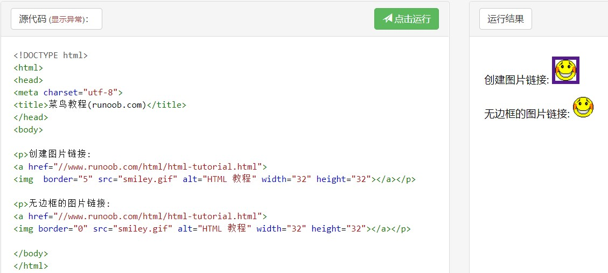

第一个HTML程序
摘要：2020.06.20开始接触HTML，感觉上手编辑网页原来这么有意思，鬼使神差之下就开始看各种课程。打算用HTML的方式来记录学习过程，
学习内容来自于RUNOOB菜鸟教程网站。
HTML = Hyper Text Makeup Language，超文本标记语言
Web标准 = 结构(Structure组织分类) + 表现(Presentation修饰渲染) + 行为(Behaviour智能交互)
<!DOCTYPE>文档声明标签，不属于HTML标签；
lang属性：语言属性，en英语，zh-CN中文，fr法语；
charset属性：规定HTML文档所使用的字符编码，UFT-8是万国码，基本包含全世界所有国家需要使用到的字符，CG2312是简体中文，BG5是繁体中文，GBK包含简体和繁体中文；
2020.06.20 周六
今天主要学习HTML的基础知识，包括元素、属性与标签.
① 元素：元素构成 HTML 文档，是从开始标签（start tag）到结束标签（end tag）的所有代码。
② 属性：属性是 HTML 元素提供的附加信息，一般描述于开始标签，总是以名称/值对的形式出现，
比如：name="value"。
今天学到的元素、标签和属性：
<p>----------------定义一个段落
<html>-------------定义整个HTML文档
<body>-------------定义HTML文档的主体，只有在body内的内容才能在浏览器上可见
<br>---------------空元素，定义换行
<hr>---------------空元素，定义水平线
<a>----------------定义一个链接，格式为【<a href="url">链接文本、图片等元素<a/>】；
还可以设置target为"_blank", 让链接将在新窗口打开；
<img>--------------插入图片并定义大小，【<img border="边框大小" src="图片地址" alt="图像替代文本"
width="宽" height="高"/>】；
<!--...-->---------定义注释内容，在浏览器中不会显示出来
<h1>-<h6>----------定义一级到六级标题
class属性----------为html元素定义一个或多个类名（classname）(类名从样式文件引入)
id属性-------------定义元素的唯一id
style属性----------规定元素的行内样式（inline style）
title属性----------描述了元素的额外信息 (作为工具条使用)
查看更多标准属性：
HTML 标准属性说明
2020.06.21 周日
今天主要学习HTML的文本格式化、计算机输出标签以及引文引用标签，计算机输出标签暂时还搞不太明白，只能在后面遇到实际应用的时候再加深理解。
<b>、<strong>--------定义粗体文字，后者着重语气；
<i>、<em>------------定义斜体文字，后者着重语气；
<sup>、<sub>---------分别定义上下标文字；
<big>、<small>-------分别定义大一号和小一号的字体，嵌套使用可以更大（小）；
<del>、<ins>---------分别定义删除、插入文字，在原文上划删除号和后面添加；
<pre>----------------定义预格式文本，在pre标签内的本本格式会正常显示出来，空格
和换行都不会自动消除，一般用于显示计算机的源代码；
<abbr>---------------定义缩写，格式为【<abbr title="缩写原文">缩写格式<abbr/>】,
鼠标停在缩写内容上时会显示缩写原文；
<bdo>----------------定义文字方向，格式为【<bdo title="rtl">文字内容<bdo/>】,
表示文字内容从右到左，用ltr属性即为正常的从左到右显示；
<q>------------------定义短引用，引用内容会被双引号括起来并有斜体效果，通常用于一句话引用；
<blockqute>----------定义长引用，内容自动缩进与斜体效果，通常用于大段引用；
<cite>---------------定义引用、引证，定义作品的标题，有斜体效果
<address>------------定义地址，定义文档作者的联系信息，有斜体效果
以下这些标签尚不知道在应用中如何使用或者其意义何在：
<code>---------------定义计算机代码
<kbd>----------------定义键盘码
<samp>---------------定义计算机代码样本
<var>----------------定义变量
<dfn>----------------定义一个定义项目
图片链接的方法：

HTML head部分的元素：
<title>----------定义了HTML文档的标题；
<base>-----------定义页面中所有链接默认的链接目标地址；
<meta>-----------描述HTML文档的描述，关键词，作者，字符集等；
<link>-----------定义了文档与外部资源之间的关系，通常用于链接到样式表；
<style>----------定义了HTML文档的样式文件引用地址；
<script>---------定义了客户端的脚本文件。
每30秒刷新页面：<meta http-equiv="refresh" content="30">>
2020.06.22 周一
今天主要学习HTML的级联样式表CSS
内联样式------------在元素中使用style属性；
内联样式表----------在head部分中使用<style>元素来包含CSS；
外联样式表----------在head内使用外部CSS文件；
常见的内联样式：
书写格式：style="样式1:样式1定义;样式2:样式2定义;..."
backgroud-color---段落背景颜色
margin-left-------标签内元素与左侧的距离
color-------------字体颜色
font-family-------字体样式
text-align--------对齐方式
内联样式表：
<style type="text/css">
元素1 {属性：值}
元素2 {属性：值}
</style>
外联样式表：
<link rel="stylesheet" type="text/css" href="url">
rel-----------------必需输入的属性，定义当前文档与被链接文档之间的关系；
url-----------------CSS文件的地址，定义被链接文档的位置；
type----------------规定被链接文档的 MIME 类型；
2020.06.23 周二
今天主要学习了图像、表格的插入。
图像插入使用img标签，包含地址属性src，加载图像过程中显示的图片信息属性alt，在CSS中使用align属性可定义图像在文本中时偏上还是偏下或居中，float属性定义图像浮动在文本的两侧，以及高度宽度属性，usemap定义可用于map标签图像定义；
map标签定义图像地图，可通过像素点位置索引图像上的指定位置，name属性必须有且与img标签中的usemap属性名称一致；
area标签在map标签内使用，可创建带有可供点击区域的图像地图，图像的特定区域都是一个超级链接；其内属性与定义如下表所示：
属性
定义方法
shape
rect(矩形); circle(圆形); poly(多边形)
coords
矩形(左上角和左下角坐标); circle(圆心坐标和半径); poly(每一个顶角的坐标)
alt
要跳转的图像信息
href
要跳转的图像地址
2020.06.24 周三
今天主要学习CSS的创建以及一部分样式与特点。
CSS创建规则：
- CSS规则由两个主要的部分构成：选择器，以及一条或多条声明;
- CSS声明总是以分号(;)结束，声明总以大括号({})括起来;
- CSS注释以 "/*" 开始, 以 "*/" 结束;
定义id属性和class属性需要注意的点：
- CSS 中 id 选择器以 "#" 来定义;以下的样式规则应用于元素属性 id="para1":
#para1 {text-align:center;color:red;}
- lass 选择器在HTML中以class属性表示, 在 CSS 中，类选择器以一个点"."号定义：
p.ctrred {text-align:center;color:red;}----只有在对应的p标签中才能引用类属性ctrred
- 注意：ID属性和class属性不要以数字开头，数字开头的ID和class在 Mozilla/Firefox 浏览器中不起作用。
插入样式表的方法：
- 外联样式表（CSS文件）：<link rel="当前文档与被链接文档之间的关系" type="文档的MIME类型" href="css文件名.css">
- 内部样式表：通过style标签在文档头部定义内部样式表
- 内联样式：在相关的标签内使用样式（style）属性
- 多重样式优先级： 内联样式 > 内联样式表 > 外联样式表 > 浏览器默认样式
背景设置（body选择器中设置，以下顺序为简写时的顺序）：
- background-color-------背景颜色
- background-image-------背景图片
- background-repeat------背景图片是否复制排列以及复制排列方向
- background-attachment--背景是否随鼠标滚动
- background-position----背景图片摆放的起始位置（左上角）
文本设置（在对应选择器中设置，p、h1-h6选择器）：
- 字体间距属性letter-spacing：1px，px是像素单位，数值可正可负
- 行间距属性line-height：行高，可用于设置行间距；
- 基线属性vertical-align：设置文本的基线与行基线的关系，top元素的顶边和行内最高元素的顶边对齐，bottom元素的底边和行的底边对齐，middle元素上下边的中心点和行基线向上1/2x的高度位置对齐？？？？？？？？？
- 单词间距属性word-spacing：30px，可以看作是空格的宽度
- 文本阴影效果text-shadow：2px 2px rgb，定义xy方向偏移效果和颜色
- 文本的对齐方式属性text-align：left左对齐、right右对齐、center居中、justify两端对齐
- 文本修饰属性text-decoration：
- none----------删除文本修饰属性，主要用于删除链接下划线
- overline------文本上方划线
- line-through--文本中间划线，删除线
- underline-----文本下方划线
- 文本转换属性text-transform：uppercase大写、lowercase小写、capitalize首字母大写
- 文本首行缩进属性text-indent：10px
字体设置：
- 字体样式font-style：正常normal、斜体italic、倾斜的字体oblique
- 字体粗细font-weight：500(nomal)，<500(lighter)、>500(bold)
- 字体大小font-size：px是像素大小，em是当前浏览器默认的字体大小，1em = 16px，可用百分比或小数与em组合
- 字体类型font-family："Time New Rome"、"宋体"等等
- 字体字型：同在font-family中设置，跟在类型之后；Serif字符末端有修饰，San-serif无修饰，Monospace等宽字符
- 字体转变font-variant：small-caps小型大写字母、normal正常
- font声明简写顺序：样式 粗细 大小/行间距 类型 字型
2020.06.27 周六
前几天在努力搭建网站，学了很多杂七杂八的东西，整理起来太混乱，以后会找个时间专门做这个专题的网页(Flag fly forever)，截至今天为止，终于用已知的知识搭建了一个首页！！欢呼！！！继续学习！
-
details标签
规定了用户可见的或者隐藏的需求的补充细节
summary标签配合使用定义标题，标题可见，点击标题时显示细节
-
float, clear标签
float：一个浮动元素会尽量向左或向右移动，直到它的外边缘碰到包含框或另一个浮动框的边框为止，浮动元素之后的元素将围绕它，浮动元素之前的元素将不会受到影响。
clear：元素浮动之后，周围的元素会重新排列，为了避免这种情况，使用 clear 属性；clear属性指定元素两侧不能出现浮动元素。
-
HTML链接
download属性：指定下载链接；
href属性：指定链接目标的URL(统一资源定位器)；
target属性：规定打开目标URL的方式：_self（相同框架，默认）,_blank（新窗口）,_parent（父框架）,_top（本窗口）,framename（指定框架）
hreflang属性：规定目标 URL 的基准语言。仅在 href 属性存在时使用
media属性：规定目标 URL 的媒介类型。默认值：all。仅在 href 属性存在时使用
-
box-shadow属性
h-shadow值：必需，水平阴影位置；v-shadow值：必需，垂直阴影的位置；
blur值：模糊距离；spread值：阴影大小；
color值：阴影颜色；inset：阴影向内延伸；
- 页面内连接到指定位置：在指定位置用a标签标记id属性即可在使用a标签链接；
-
table标签
定义一个表格，其内的子标签和属性有：
tr定义行，th定义表头，td定义单元格，caption定义标题；
clogroup定义表格列的组；col定义属性用于表格列；
thead、tbody、tfoot分别定义表格页眉、主体和页脚。
边框属性：cellpadding(单元格内边距)、cellspacing（单元格的间距）；border-collapse: collapse（边框折叠为单一）；
跨行、跨列属性：<colspan(rowspan)="数值">——数值表示跨过的行和列数；
2020.06.29 周一
表单：form标签(只有此标签内的信息能收集到指定的文件中)，action属性定义保存信息的文件，以文件类型为.php；
子标签：input、select、textarea、fieldset、button、datalist。
- input标签，定义单行文本输入，其主要属性为type，name，value：
type属性：定义输入类型
text定义文本域；password定义密码字段；radio定义单选框；checkbox定义多选框；
button创建按钮；submit定义提交按钮；range创建进度条(默认0-100)；color定义取色器；
date定义年月日选择按钮；email定义邮件格式，自动对 email 字段进行验证；
hidden定义隐藏文本，用于储存默认值；img定义图片作为提交按钮；searc定义搜索字段；
month定义年月、week定义年和周、number定义可选数字、time定义时和分；reset定义重置表单；
tel定义电话号码；url定义URL字段；
file定义上传文件；
name属性：定义输入框所收集的数据类型；values属性：定义收集的数据值，只有按钮和选框时使用。
- select标签：定义下拉列表；name属性定义数据类型；
其内使用option子标签定义下拉列表的内容，option标签的属性有value属性定义可选内容，selected属性定义预选内容，一个option标签只能有一个值，一个select标签内只能有一个option可以使用预选属性selected；
optgroup则定义选项组，将下拉列表内容性质一致的定义为同一组。骨架标签如下：
- fieldset标签：定义一组相关的表单元素，并用外框标记，其标题则有legend子标签定义
- button标签：定义一个按钮；type属性有button、reset、submit；
- datalist标签：可配合input标签使用，定义输入控件的选项列表，input需要设定list属性，其名称与datalist的id名称要一致；datalist的内容定义子标签也是option标签。
- textarea标签：定义多行文本框
iframe标签：框架标签，可以显示链接目标的内容
首页页面可以在下面显示，点击 主页页面
则跳转到主页页面：
总结
到此为止，html的基本知识算是学完了，基本的html结构的css渲染已经掌握，
但是网页交互功能还没开始入手，下个月开始会逐渐深入学习HTML5以及CSS，
初步学习JavaScript语言。同时，会将后面学到的新知识不断完善这个网页，那么，
7月！我来啦！！！！！！
{kind=link}